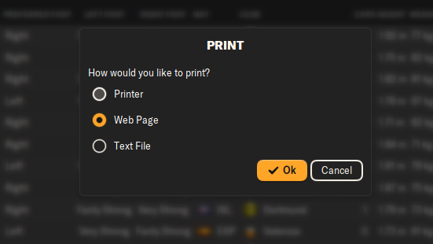
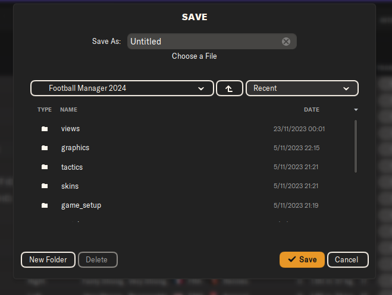

First go to your Players Search or Shortlist or Shquad screen in the Football Manager game
If you are in the Players Search screen or the Shortlist screen,
Filter the results to MAXIMUM 4534 players
Click on one of the lines that represent a player in the players table and
then click : CTRL A
It should look like this :
After selecting all of the players click : CTRL P
And it will show you a pop up screen like this :
Select the Web Page option and then click OK
Now it will show you a pop up screen that let you choose where do you want to store the HTML file in you PC as you see in the next picture. Put the file in a place you will remember and then click : Save
Now you saved your HTML file with the player's data and ready to upload it !